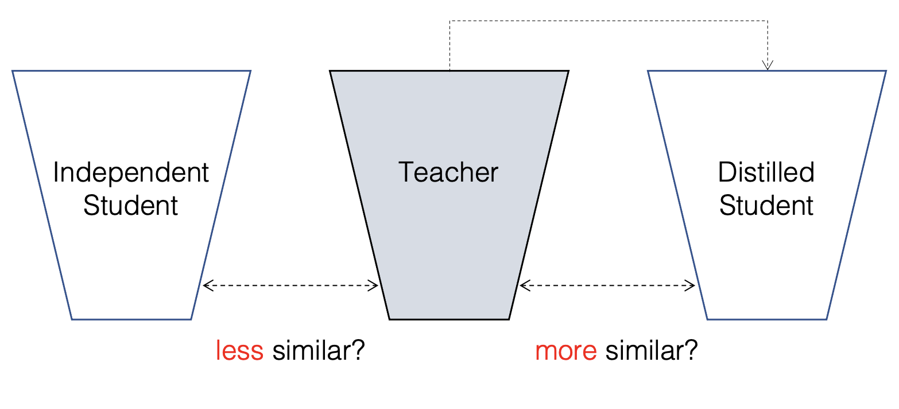
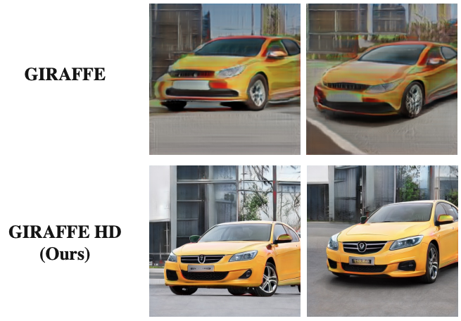
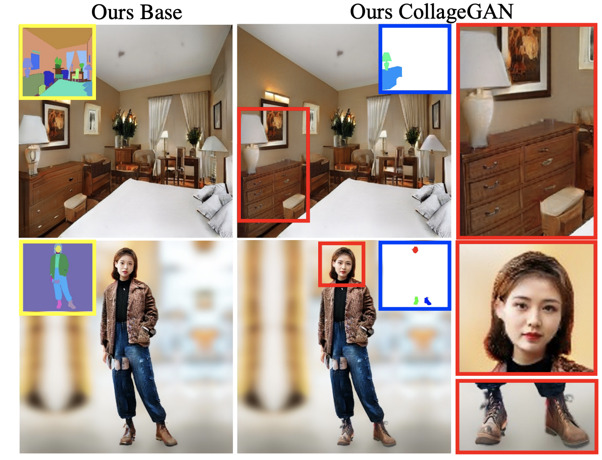
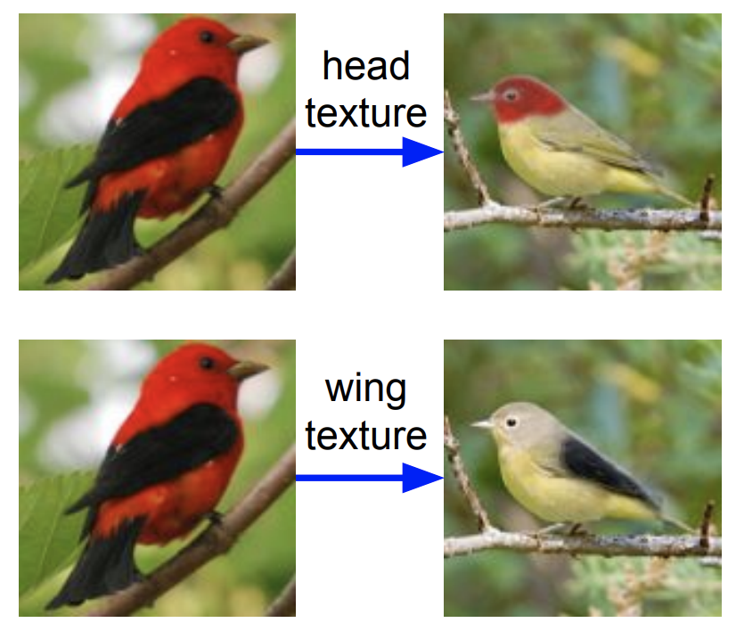
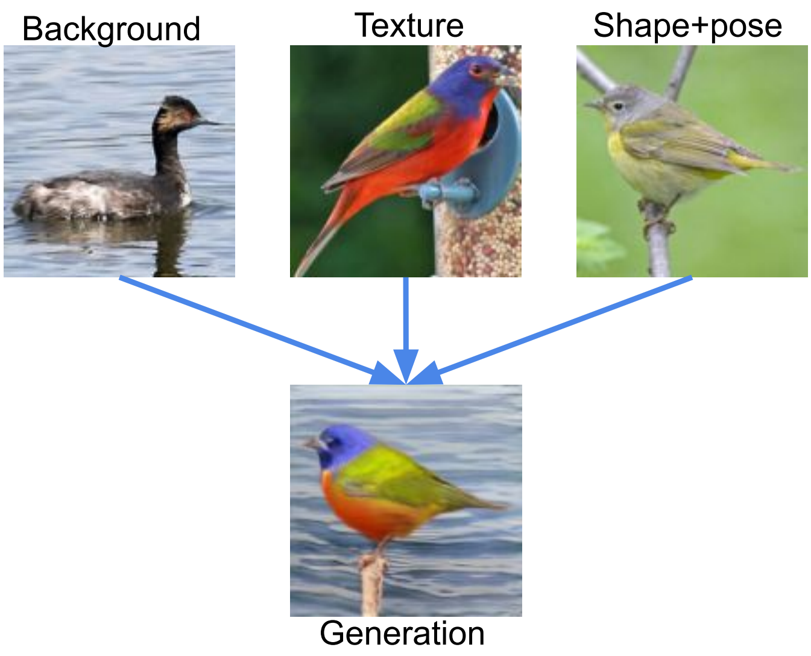

Hi, I am a computer science Ph.D. student at University of Wisconsin-Madison, advised by Prof. Yong Jae Lee. Generally, I am interested in image generation and manipulation.
Email / CV / Google Scholar


Yuheng Li, Haotian Liu, Qingyang Wu, Fangzhou Mu, Jianwei Yang, Jianfeng Gao, Chunyuan Li*, Yong Jae Lee*
(*equal advising)
arxiv, 2022
[arXiv] [code] [Project Page] [Demo]
Yuheng Li, Haotian Liu, Qingyang Wu, Fangzhou Mu, Jianwei Yang, Jianfeng Gao, Chunyuan Li*, Yong Jae Lee*
(*equal advising)
CVPR, 2023
[arXiv] [code] [Project Page] [Demo] [Youtube]

Utkarsh Ojha*, Yuheng Li*, Yong Jae Lee
(*equal contribution)
arxiv, 2022

Yuheng Li, Yijun Li, Jingwan Lu, Eli Shechtman, Yong Jae Lee, Krishna Kumar Singh
Proceedings of the European Conference on Computer Vision (ECCV), 2022

Yang Xue, Yuheng Li, Krishna Kumar Singh, Yong Jae Lee
IEEE Conference on Computer Vision and Pattern Recognition (CVPR), 2022
[arXiv] [code]

Yuheng Li, Yijun Li, Jingwan Lu, Eli Shechtman, Yong Jae Lee, Krishna Kumar Singh
IEEE International Conference on Computer Vision (ICCV), 2021
[arXiv] [project]

Yuheng Li, Krishna Kumar Singh, Yong Jae Lee
British Machine Vision Conference (BMVC), 2021

Yuheng Li, Krishna Kumar Singh, Utkarsh Ojha, Yong Jae Lee
IEEE Conference on Computer Vision and Pattern Recognition (CVPR), 2020
[arXiv] [code]